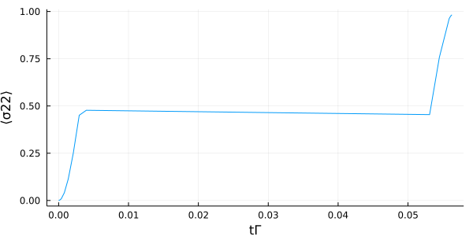
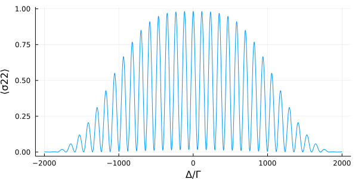

Ramsey Spectroscopy
A typical problem in quantum optics is the interrogation of an atom with an external driving field. In this brief example we apply the Ramsey interferometry on a single two-level atom. The distinctiveness of this method is the time dependent laser field. In particular, two short $\pi/2$-pulses are employed with a free evolution between them. This system is described by the simple Hamiltonian
\[H = - \Delta \sigma^{22} + \Omega(t) (\sigma^{21} + \sigma^{12}),\]
where $\Delta = \omega_l - \omega_a$ is the detuning between the laser and atomic resonance frequency, and $\Omega(t)$ describes the time dependent driving field. Additionally we include atomic decay and dephasing, with the rates $\Gamma$ and $\nu$, respectively.
We start by loading the packages.
using QuantumCumulants
using OrdinaryDiffEq, ModelingToolkit
using PlotsBeside defining the symbolic parameters we additionally need to register a time dependent external function $f(t)$ for our driving laser. To this end we first need to define the independent variable $t$ of our time evolution. Due to the registration, $f(t)$ is treated as a parameter in the symbolic equations, but at the numerical evaluation we can assign every function to it.
@cnumbers Δ Ω Γ ν
@syms t::Real
@register f(t)After defining the Hilbert space and the operator of the two-level atom we construct the time dependent Hamiltonian as well as the jump operator list with the corresponding rates.
# Hilbert space
h = NLevelSpace(:atom,2)
# operator
σ(i,j) = Transition(h, :σ, i, j, 2)
# Hamiltonian
H = -Δ*σ(2,2) + f(t)*Ω/2*(σ(1,2) + σ(2,1))
# Jump operators & rates
J = [σ(1,2), σ(2,2)]
rates = [Γ, ν]The two-level atom is completely described with the excited state population and the coherence. Therefore we derive the equations for these two operators.
eqs = meanfield([σ(2,2), σ(1,2)],H,J;rates=rates)\[\begin{align} \frac{d}{dt} \langle {\sigma}^{{22}}\rangle =& -1.0 \Gamma \langle {\sigma}^{{22}}\rangle + \frac{1}{2} i \Omega f\left( t \right) \langle {\sigma}^{{12}}\rangle + \frac{-1}{2} i \Omega f\left( t \right) \langle {\sigma}^{{21}}\rangle \\ \frac{d}{dt} \langle {\sigma}^{{12}}\rangle =& \frac{-1}{2} i \Omega f\left( t \right) -0.5 \Gamma \langle {\sigma}^{{12}}\rangle -0.5 \nu \langle {\sigma}^{{12}}\rangle + 1 i \Delta \langle {\sigma}^{{12}}\rangle + 1 i \Omega f\left( t \right) \langle {\sigma}^{{22}}\rangle \end{align}\]
To calculate the dynamic of the system we create a system of ordinary differential equations and define the numeric parameters with the time dependent function.
@named sys = ODESystem(eqs)
# Parameter
Γ_ = 1.0
Ω_ = 500Γ_
Δ_ = 0Γ_
ν_ = 0.2Γ_
tp = π/2Ω_ # π/2-pulse
tf = 1/20Γ_ # free evolution without drive
function f(t)
if t<tp || (t>tp+tf && t<2tp+tf)
return 1
else
0
end
end
ps = [Γ; Ω; Δ; ν]
p0 = [Γ_; Ω_; Δ_; ν_]
# Initial state
u0 = zeros(ComplexF64, length(eqs))Finally, we calculate and plot the time evolution.
prob = ODEProblem(sys,u0,(0.0, 2tp+tf), ps.=>p0)
sol = solve(prob,Tsit5(),maxiters=1e7)
# Plot time evolution
t = sol.t
s22 = real.(sol[σ(2,2)])
plot(t, s22, xlabel="tΓ", ylabel="⟨σ22⟩", legend=false, size=(600,300))
Scanning over the detuning for the excited state population leads to the well-known Ramsey fringes.
Δ_ls = [-2000:4:2000;]Γ_
s22_ls = zeros(length(Δ_ls))
for i=1:length(Δ_ls)
prob_i = ODEProblem(sys,u0,(0.0, 2tp+tf), [Γ; Ω; Δ; ν].=>[Γ_; Ω_; Δ_ls[i]; ν_])
sol_i = solve(prob_i, RK4(); adaptive=false, dt=1e-5)
s22_ls[i] = real.(sol_i[σ(2,2)])[end]
end
plot(Δ_ls, s22_ls, xlabel="Δ/Γ", ylabel="⟨σ22⟩", legend=false, size=(600,300))